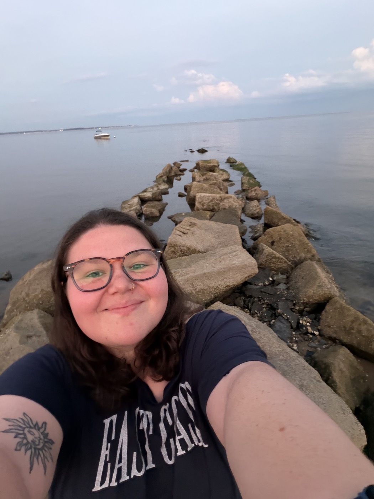

This website
A small, considered home on the internet — designed and published with GitHub Pages.
View the code ↗“Pay attention. Be astonished. Tell about it.” - Mary Oliver
I think that one of the wonders of humanity is the capacity within each of us to be astonished. The sense of wonder and excitement that washes over you when you experience something new. When you meet that goal you’ve been working towards. When you see or hear something genuine or refreshing. When you fail, pick yourself up off the ground, and try again. That thing that once felt unattainable is no longer a dream but a reality. The great irony here… that feeling, that astonishment, is something that you have to allow yourself to feel.
In some ways, it feels like I have lived 500 different lives. Some were rather dull, but others shine in my memory. What makes those bright spots stand out in my memory? Those were the moments, experiences, and chapters that I navigated with a hunger for knowledge. One of those is a chapter of my life that has recently come to a close: my time at the University of North Carolina at Chapel Hill. College was not easy and my first two years were filled with many challenges. Now that I’ve graduated, moved to a new state, and started a new job, I keep coming back to the experiences at Carolina that shaped my sense of what was possible. Some of these moments felt small when they happened. It’s only now, with a little distance, that I can see how much they changed me.
Like the political theory course I took in the fall of my junior year. I wasn’t very excited to take a political theory course, and I definitely wasn’t excited to take on the identity of a Jacobin during the French Revolution. That class pushed me like no other had. I exercised my critical thinking skills in new ways, leaving me with new muscles to flex after the fact. Not only did I push my thinking, but I unlocked a new passion. I fell in love with political theory and went on to take several simulation-style courses with that professor, who became one of my favorites.
When I think about what I want to do with my life, I think about how I felt at the end of that class. I’d spent a semester wrestling with ideas I hadn’t expected to care about, and I wanted to keep going. I want to keep giving unfamiliar things a chance, even when my first instinct is to write them off. I want to spend time with ideas that challenge me and see how those experiences change the way I think and the person I’m becoming.
This site is where I’ll write about what I’m learning along the way. I hope that, years from now, I’ll be able to look back and see all the ways I’ve allowed myself to be astonished.

Featured piece
A short description of your featured project or piece — what it is, why you made it, and what you learned. Keep it to a few lines and let the image do the rest.
Read more →01 — About
I'm Sierra — a curious maker who likes turning ideas into things you can actually use. This site is where I collect those experiments, share what I'm learning, and leave a trail of my work.
Expect a mix of projects, photographs, and notes written mostly for myself but hopefully useful to someone else.
02 — Projects
A small, considered home on the internet — designed and published with GitHub Pages.
View the code ↗Where experiments, repositories, and half-finished ideas live.
Visit profile ↗Reserved for whatever I make next. Ideas welcome.
03 — Writing
Short notes on what I'm reading, making, and learning. Open the popup to see the latest posts from Substack without leaving this page.